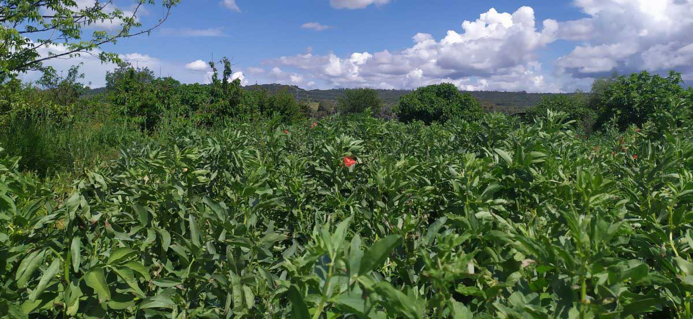
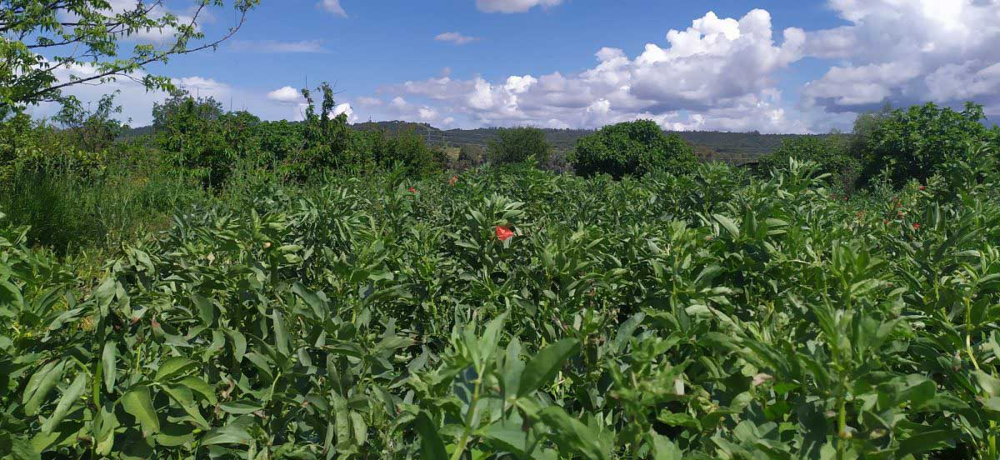
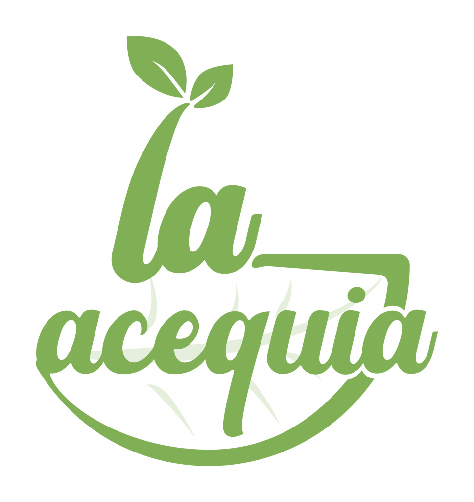
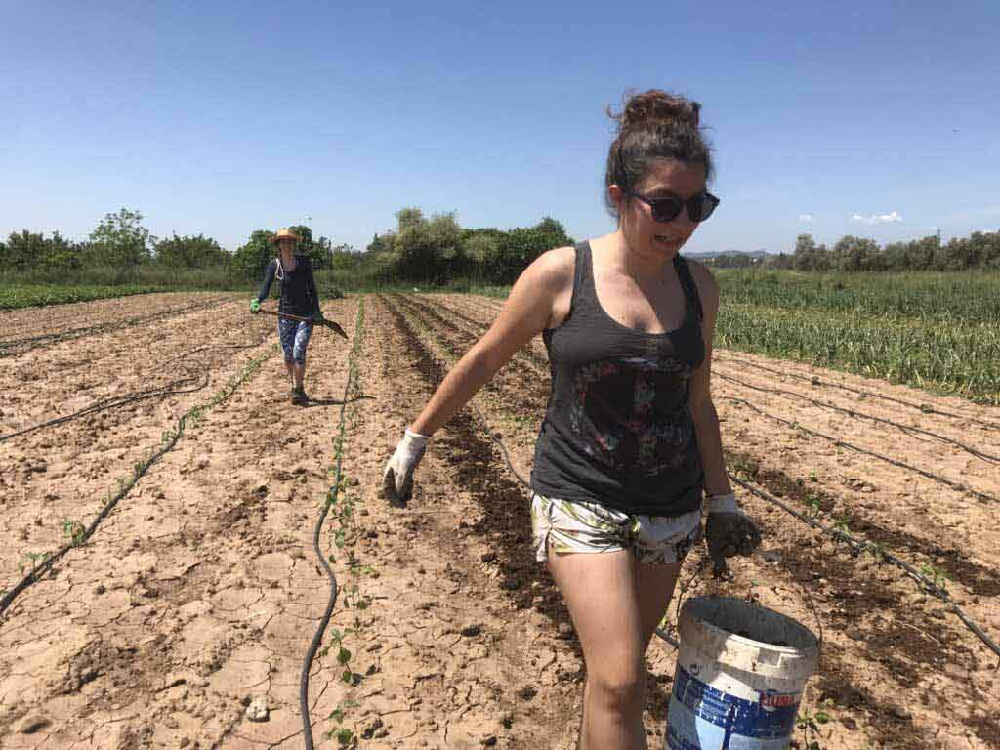
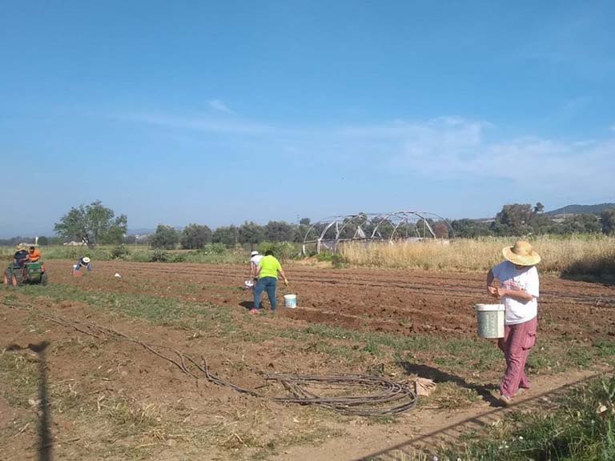
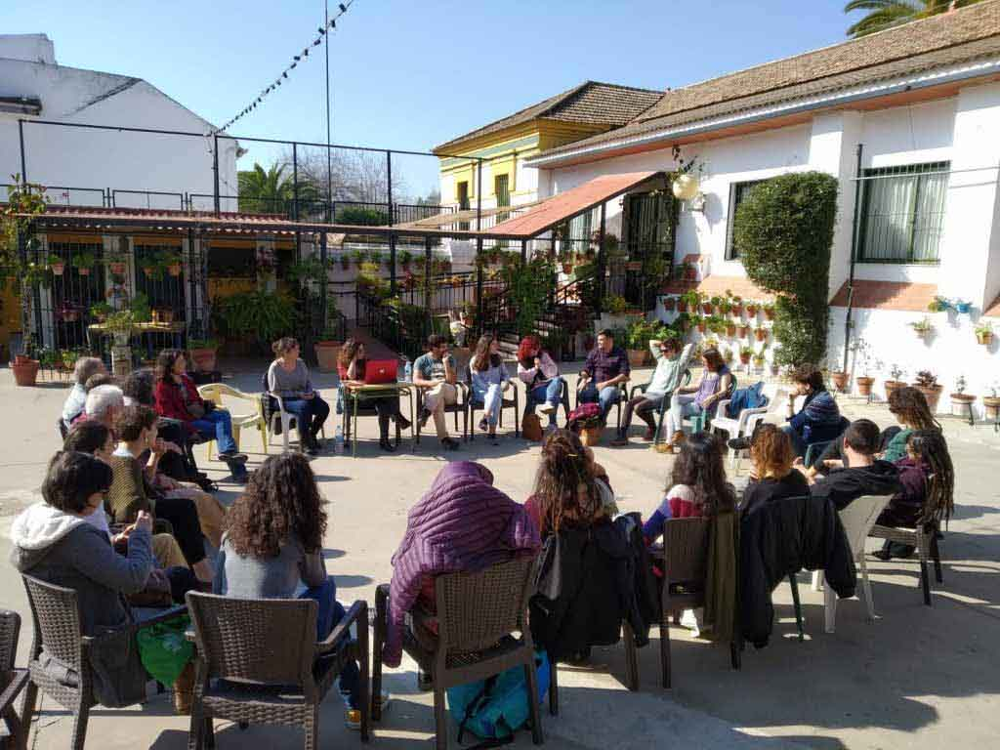
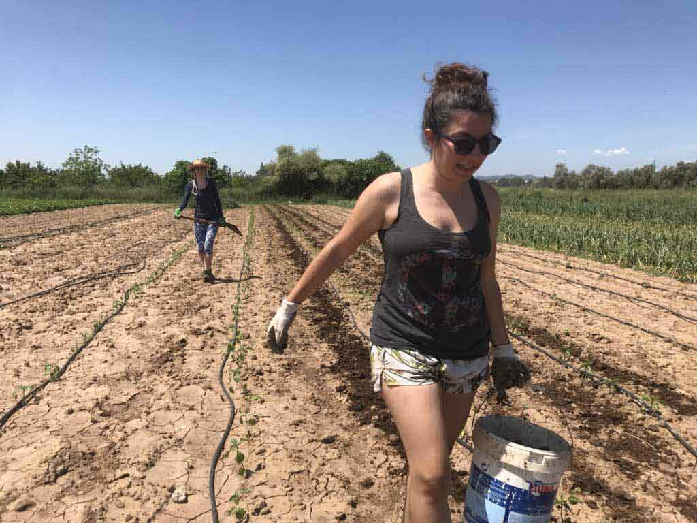
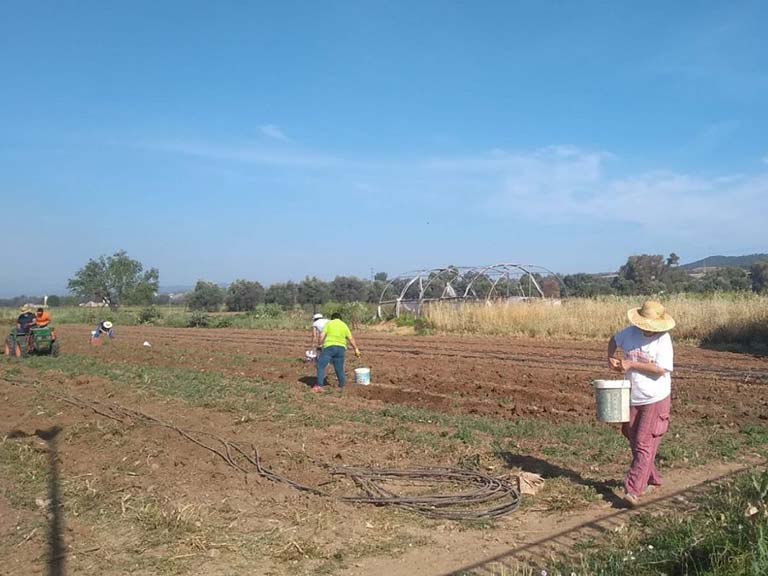
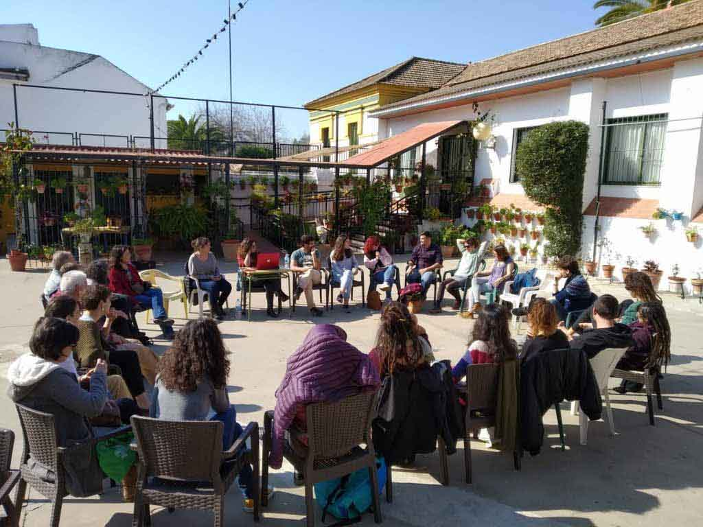

ZONA PRINCIPAL


You can follow our daily life and the activities we organize through social networks.
If you are interested in participating as a member of La Acequia or answering any questions or queries, write to us at: laacequia.cordoba@gmail.com
... or if you prefer to meet us in person and see how we work, every Thursday we distribute vegetables among the members of La Acequia in a neighborhood of Córdoba (ask us).
 


 




